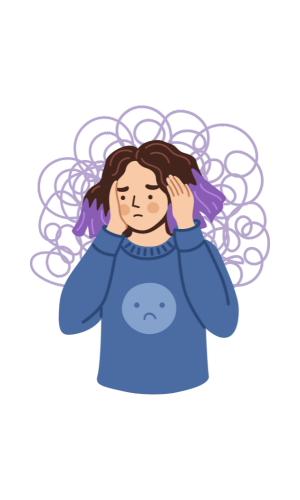

What is Anxiety Disorder?

Anxiety disorder is a mental health condition characterized by persistent and excessive worry, fear, or
nervousness that interferes with daily life. People suffering from anxiety disorders often experience
overwhelming thoughts and emotions that can prevent them from enjoying normal activities. While it's
normal to feel anxious at times, those with anxiety disorders experience these feelings frequently and
intensely, often without an obvious cause. Anxiety disorders can manifest in many different forms,
including generalized anxiety disorder (GAD), panic disorder, social anxiety disorder, and specific
phobias.
For individuals with anxiety disorder, even simple daily tasks can become difficult. Understanding
anxiety disorder and its impact on a person's life is crucial for providing support and finding
effective treatments.
Symptoms of Anxiety Disorder
The symptoms of anxiety disorder can vary widely, but common signs include:
- Excessive Worry or Fear: Feeling anxious or fearful about everyday situations, even
when there’s no clear cause.
- Panic Attacks: Sudden, intense feelings of fear or terror that can cause physical
symptoms like chest pain, rapid heartbeat, and shortness of breath.
- Restlessness or Feeling on Edge: A constant sense of unease or nervousness.
- Difficulty Concentrating: Anxiety often makes it difficult to focus on tasks and
think clearly.
- Physical Symptoms: Anxiety can lead to physical symptoms such as rapid heartbeat,
sweating, trembling, and headaches.
In some cases, anxiety can become so severe that it interferes with a person's ability to function
normally in work, school, or social situations.
Causes of Anxiety Disorder
Although the exact cause of anxiety disorder isn't fully understood, several factors are believed to
contribute to its development:
- Genetics: A family history of anxiety disorders or other mental health conditions
increases the likelihood of developing anxiety disorder. Specific genes might also play a role in
how the brain processes fear and stress.
- Environmental Stress: Stressful or traumatic events, such as the loss of a loved
one, a major life change, or abuse, can trigger anxiety disorders. Chronic stress can also increase
vulnerability to anxiety.
- Chemical Imbalances in the Brain: Neurotransmitters such as serotonin and dopamine
help regulate mood. An imbalance in these chemicals can contribute to the development of anxiety.
- Personality: People with certain personality traits may be more prone to anxiety.
For example, individuals who are perfectionistic or have low self-esteem may experience heightened
levels of anxiety.
It’s important to note that there’s no single cause for anxiety disorder. Instead, it’s likely a
combination of genetic, environmental, and psychological factors that contribute to the condition.
Treatment for Anxiety Disorder
There are several effective treatments available for managing anxiety disorders. With the right approach,
most people can significantly reduce their symptoms and improve their quality of life:
- Cognitive Behavioral Therapy (CBT): CBT is a type of therapy that helps individuals
identify and change negative thought patterns that contribute to anxiety. It’s one of the most
widely used and effective therapies for anxiety disorders.
- Medication: Various medications may be prescribed, including
antidepressants, anti-anxiety medications, and beta-blockers, to help
reduce symptoms of anxiety.
- Relaxation Techniques: Deep breathing exercises, meditation, mindfulness, and yoga
can help reduce stress and calm the nervous system. These practices can be integrated into daily
life to help manage anxiety levels.
- Support Groups: Talking with others who understand what you're going through can
provide emotional support and help you feel less isolated. Group therapy or online forums can be
valuable for connecting with others dealing with anxiety.
It’s essential to work with a healthcare professional to find the treatment plan that works best for the
individual.